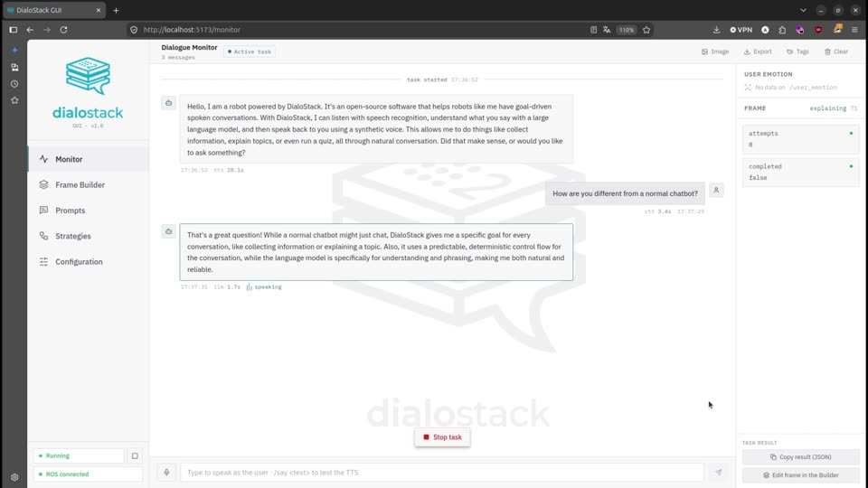

🧠
Any LLM, one interface
Gemini, Claude, OpenAI, any OpenAI-compatible server (vLLM, LM Studio, OpenRouter) or local Ollama models. JSON-constrained outputs, streaming and prompt caching on every provider. Switch with one field.
DialoStack is an open-source spoken dialogue stack for robots: speech recognition, an LLM-powered dialogue engine with a deterministic core, text-to-speech and a web GUI. Your robot takes orders, teaches, quizzes and guides, by voice, in any language.
docker run -d -p 5173:5173 -p 9090:9090 ghcr.io/aquintan4/dialostack
Plays well with
Every conversation has a goal and an end. Pick a strategy with one field of the ROS 2 goal, or describe the task in plain words and let the engine design the questions.
The LLM never decides what happens next. It answers narrow, schema-constrained questions and phrases one reply. Everything else is plain, tested Python.
Gemini, Claude, OpenAI, any OpenAI-compatible server (vLLM, LM Studio, OpenRouter) or local Ollama models. JSON-constrained outputs, streaming and prompt caching on every provider. Switch with one field.
faster-whisper with Silero VAD, streaming Piper voices, self-muting and true barge-in.
Live monitor with per-turn latencies, visual frame builder, prompt editor, config profiles, session export.
Local devices, the browser tab, or raw PCM over ROS: hear on the robot, think on the GPU box.
One parameter switches the prompts and the fixed phrases. Spanish and English voices out of the box.
Facial emotion and lip-activity detection feed the user's state into the prompts, so tone adapts.
Talking gestures, postures and eye LEDs for the NAO, in RViz and on the real robot. Core stays robot-agnostic.
CPU and CUDA images, Linux and Windows 11 compose files, automatic GPU detection.
A BehaviorTree.CPP leaf node runs a dialogue as one step of a larger robot mission.
A ROS-free evaluation suite (precision/recall/F1, confusion matrices, end-to-end task completion) on hand-annotated datasets to compare models and validate prompt changes, plus 336 unit tests over the deterministic core and the GUI.
No YAML editing, no terminals. Configure the engine, build a task visually and see each turn as it happens, with timings for speech, LLM and voice.

Live transcript, latencies, barge-in, frame and emotion. Export to CSV, JSON, Markdown.
Slots, quiz banks and procedure steps, in a library.
Override any template, with placeholder validation.
Edit each strategy's fixed phrases, per language.
LLM, dialogue, STT, TTS and audio, saved as profiles.
Sound travels as raw PCM over a tiny ROS 2 contract (AudioChunk). Anything that speaks it is a microphone and a speaker for DialoStack.
The GUI tab captures with echo cancellation and plays the voice. Zero audio setup: perfect for Docker and demos.
Capture and play on the robot's head or a Raspberry Pi; run Whisper, Piper and the LLM on a stronger machine.
Classic setup: the machine running the nodes hears and speaks. PulseAudio, PipeWire and WSLg supported.
Run the image, open the GUI, paste an API key (or pick a local Ollama model), press Start engine and speak.
# Linux or Windows 11 with Docker docker run -d --name dialostack -p 5173:5173 -p 9090:9090 ghcr.io/aquintan4/dialostack # then open http://localhost:5173 → Configuration → LLM → Start engine
Compose files for host audio and ROS 2 networking: installation guide.
# Whisper medium / large-v3 in real time on an NVIDIA GPU docker run -d --name dialostack --gpus all -p 5173:5173 -p 9090:9090 \ ghcr.io/aquintan4/dialostack:latest-cuda
The STT device defaults to auto: GPU when there is one, CPU otherwise.
# Ubuntu 24.04 + ROS 2 Jazzy mkdir -p ~/dialostack_ws/src && cd ~/dialostack_ws/src git clone https://github.com/aquintan4/DialoStack.git && cd .. pip install -r src/DialoStack/speech_io/requirements.txt \ -r src/DialoStack/ros2_llm_manager/config/requirements.txt colcon build --symlink-install && source install/setup.bash ./src/DialoStack/scripts/download_models.sh export GEMINI_API_KEY="your-key" ros2 launch ros2_dialog_manager main.launch.py
ros2 action send_goal --feedback /dialog/execute_task \ ros2_dialog_interfaces/action/DialogTask \ "{task_description: 'Take a coffee order: drink type, size and customer name', dialog_mode: 'slot_filling', domain: 'coffee shop'}" # result.final_frame_json → {"drink": "latte", "size": "large", "name": "Ana"}
Patient intake, pre-surgery instructions with understanding checks, guided rehab exercises.
Spoken quizzes, tutoring and explanations with comprehension checks.
Orders, check-in, wayfinding and FAQs, returning structured data to your systems.
Reproducible, logged, measurable dialogues with exportable sessions and an evaluation suite.
No. With the Docker image the browser tab is the microphone and speaker, so you can build and test dialogues on a laptop. A robot plugs in later through ROS 2 topics.
Google Gemini, Anthropic Claude, OpenAI, any OpenAI-compatible server (vLLM, LM Studio, OpenRouter) and local models through Ollama. The provider is one configuration field, and each dialogue can pick its own.
Yes. Speech recognition (faster-whisper) and synthesis (Piper) always run locally; with Ollama the language model does too.
Any language your speech models and LLM handle. One parameter switches the prompts and the fixed phrases; Spanish and English voices are downloaded by default.
Any ROS 2 robot. The SoftBank NAO has a ready-made layer with gestures and eye LEDs. Other robots publish their microphone on /audio_in, play /audio_out, and map /is_speaking to their effectors.
Yes. A strategy is one Python class with on_init and on_user_turn, registered with @register_strategy("my_mode"). It inherits cancellation, timeouts and barge-in for free.
Open source under MIT. Star the repo to follow releases, or get in touch for custom integrations, strategies and deployments.